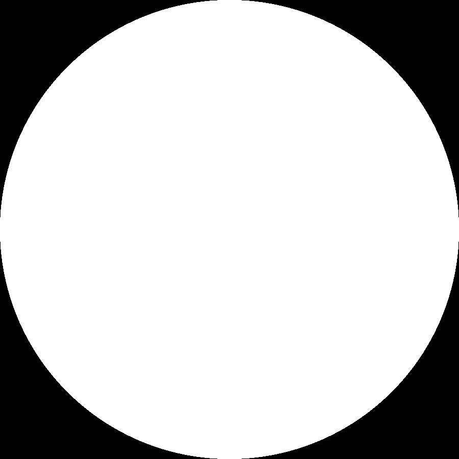
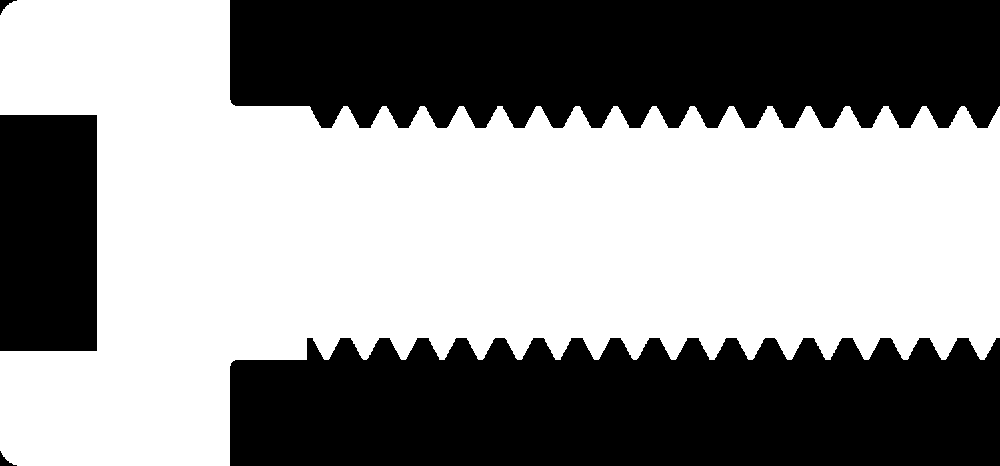

Seven custom blocks.
One import call.
A complete parametric Torx screw, ported to the offline recipe harness and imported into a live nTop notebook in a single call. The import created all seven custom blocks that the recorded API surface lists no method for.
Scope. One native session on one build. The verdict rests on 479 field samples and a graph readback, not on a mesh comparison. The 0.1 micrometre gate below verifies the declared CAD construction only: the supplied informative contour ratios carry no certified error bound, and no manufacturing conformity is claimed.
Which notebook these numbers describe. Every measurement on this page was taken on the ported thirteen-input block, rebuilt from the source tables and imported by recipe. The notebooks linked below are the released V2 compact originals, which expose eighteen inputs: they add Placement mode, Reference Body, Tilt X, Tilt Y and Flush, and return a paired screw and mould container read through two extractor blocks. The release carries its own verification, recorded in its source project. Do not read the figures below as measurements of the released assembly.
01 / The portThe same graph, rebuilt in Python
The source project authored this screw in JavaScript and converted each block with
ntopcl. nTop then wrote back what it believes the graph is. That readback is
kept here as the comparison
reference. torx.py rebuilds the same eight blocks against the recording
backend in this repository, from the same ISO source tables, and
check_recipe.py compares the two.
Identifiers are the only thing allowed to differ, because nTop mints its own on every
conversion. The exporter also writes a type key on call nodes and an empty
dimension on dimensionless inputs, which the recipe form omits. Everything
else has to agree: every function identifier, every literal value and unit, every
input index, every reference, every import and every cbRefs entry.
| Block | Inputs | Body entries | Graph nodes | Against the recorded recipe |
|---|---|---|---|---|
| Countersunk Head 2013 | 4 | 7 | 20 | identical |
| Torx Internal | 4 | 39 | 216 | identical |
| Screw Head | 6 | 11 | 36 | identical |
| Pan Head | 6 | 13 | 42 | identical |
| Metric Thread Kernel | 6 | 11 | 29 | identical |
| Torx Local Development | 9 | 49 | 998 | identical |
| Place Screw | 5 | 30 | 100 | identical |
| Torx (root) | 13 | 6 | 10 | identical |
All 8 agree. The offline build takes 0.063 s and writes a 1,067,220 byte recipe carrying the transitive closure of seven definitions in dependency order.
The one string the port deliberately did not modernise is the description
of the Metric size index input, which still names the source project's
catalogue.js. A description belongs to a block's content key, so rewording it
would have made the block a different block.
02 / One callimport_recipe creates custom blocks
The recorded API surface for build 42926 says that the API edits existing custom blocks
and lists no method that creates or imports one. Taken at face value that would put this
screw out of reach of the Notebook API altogether: it is an assembly of seven referenced
custom blocks, and no sequence of add_block and
connect_block_property calls can bring a definition into existence.
It is reachable, through the recipe. A complete recipe carries its
definitions in imports and calls them by uuid. Importing one into an empty
notebook that held 0 custom blocks left it holding 7,
named exactly as the recipe names them.
| Import | Recipe bytes | Call count | Seconds | Variables after | Custom blocks after | Saved notebook |
|---|---|---|---|---|---|---|
| Public block | 1,067,220 | 1 | 32.7 | 6 | 7 | 1,379,587 B |
| Public block and measurement band | 1,592,175 | 1 | 186.3 | 501 | 7 | 3,240,685 B |
The measurement notebook is the same graph plus 479 evaluate_field probes
and eight configurations of the assembly. It imports in one call as well, and
every probe read a value on the first poll, in 0.058 s: nothing had to be
waited on.
A choice input cannot be set from the live API on this build, so the verification band calls the local assembly directly with integer literals the recipe carries. The four public Choice Lists are checked separately, by reading back the selection variables the root body computes: 4 of 4 resolve to the source identifier the assembly expects.
02b / The wired exampleFifteen definitions, two of them called Torx
The origin project also ships an example on top of this screw: one configured
Torx call feeding two named list extractors and two native Boolean consumers, with
mould outputs and flush placement. It is the harder import. Fifteen definitions
nested three deep, and two of them are both called Torx:
the thirteen-input public block and the eighteen-input wrapper that adds the mould
branch and the flush shift. One display name, two behaviours, two uuids.
A recipe refers to a definition by uuid and never by name, so the ambiguity is
only in what a human reads. Whether the import would keep both was not known until
it was run. It keeps both: 15 custom blocks from zero, fourteen
distinct names with Torx twice, in one call and 13.4 s. All 6 root
variables read e_OK.
nTop's own readback of the imported notebook, compared against the recipe it
came from, is identical across the root graph, same variables in the same
order. recipe_only omits the definitions, so that is what the
comparison covers.
Why the recipe travels and the released notebook does not
The source release ships a manifest with a size and digest for each file. Seven
of eight match. Torx_Example.ntop does not.
| Released file | Manifest bytes | On disk | Digest |
|---|---|---|---|
| Torx.json | 1,033,099 | 1,033,099 | matches |
| Torx.ntop | 1,367,456 | 1,367,456 | matches |
| Torx_Example.json | 1,073,695 | 1,073,695 | matches |
| Torx_Example.ntop | 1,544,256 | 15,233,693 | differs |
| Torx_Outer_Moulds.json | 6,984 | 6,984 | matches |
| Torx_Outer_Moulds.ntop | 13,837 | 13,837 | matches |
| Torx_Screws.json | 7,053 | 7,053 | matches |
| Torx_Screws.ntop | 14,099 | 14,099 | matches |
Converting a notebook runs every block at its default inputs and caches the result inside the file, so the released example had been reconverted after its manifest was written and carries about 13.7 MB of cached solve. Copying it would have published an artefact that fails its own release manifest. Importing the recipe instead produced 1,559,105 bytes, +0.96 per cent of the signed size. The mismatch is a fact about the source release, not about this demo; the origin project is read-only from here and was not touched.
03 / The yardstickA mirror, frozen before the run
torx_spec.py is a closed-form mirror with no nTop import: the exact tangent
arc contour of the recess, the helical thread law, the head sections, the placement frame
and the validity gate, all in pure Python. It was frozen before the first dispatch.
It predicts the surface, not interior distances. The composed field is not a Euclidean signed distance and is not claimed to be one: a revolved body carries its section distance in the half plane, the thread carries a radial residual with axial caps, and the sharp booleans are exactly min, max and max(f, -g). So each prediction is a point where any correct field must read zero, plus the sign of the field two micrometres either side of it along the outward normal. A constant zero field would pass the first test; it cannot pass the second.
check_spec.py checks the mirror on its own terms before anything native
runs: 748 checks, 0 failed, worst disagreement 5.13e-14 mm. It recomputes the concave
arc radius by bisection for all sixteen drive sizes, asserts external tangency and sixfold
symmetry, recovers the declared A and B dimensions exactly, verifies the thread's axial and
angular periods and its flank slope, and confirms the placement frame is orthonormal,
right-handed and rigid.
| Predicted | Count | What it settles |
|---|---|---|
| Boundary points | 146 | the surface is where the mirror says it is, to 1e-7 m |
| Sign probes | 333 | the field changes sign across that surface, and solid is solid on the inside |
| Configurations | 8 | families, series, sizes, overrides and placements |
| Refused inputs | 6 | each breaking one named condition of the validity gate |
04 / Measured geometry479 of 479, against predictions written first
Each configuration is one call to the local assembly with literal inputs, placed through
the placement block, with one evaluate_field probe per prediction. The gate is
1e-7 m at a boundary point. The worst residual over the whole set is 7.706e-8 m.
| Configuration | Metric size | Drive | Boundary | Sign | Worst residual, m | Result |
|---|---|---|---|---|---|---|
| default | M3 x 0.5 | T10 | 18 | 41 | 5.87e-11 | 59 / 59 |
| oblique | M3 x 0.5 | T10 | 18 | 41 | 5.01e-10 | 59 / 59 |
| rotated | M3 x 0.5 | T10 | 18 | 41 | 5.93e-11 | 59 / 59 |
| farfield | M3 x 0.5 | T10 | 18 | 41 | 7.71e-8 | 59 / 59 |
| m8 | M8 x 1.25 | T45 | 18 | 41 | 1.31e-10 | 59 / 59 |
| t25 | M5 x 0.8 | T25 | 18 | 41 | 7.28e-11 | 59 / 59 |
| tamper | M5 x 0.8 | T25 | 20 | 46 | 7.28e-11 | 66 / 66 |
| custom | M3 x 0.5 | T10 | 18 | 41 | 1.15e-10 | 59 / 59 |
Worst residual is the largest absolute field value at a point the mirror
places on the surface. The tamper row carries two extra boundary points and
five extra sign probes, for the round post the internal family does not have.
05 / Placement resolutionThe residual scales with the insertion distance
Three of the eight configurations are the same screw under the same oblique rotation and the same 37 degree clocking, differing only in where the insertion point sits. That separates a rotation cost from a translation cost, which one oblique case alone cannot do.
| Configuration | Insertion distance, mm | Mean residual, m | Worst residual, m | Residual / distance |
|---|---|---|---|---|
| rotated | 0.000 | 2.84e-11 | 5.93e-11 | not applicable |
| oblique | 14.775 | 2.12e-10 | 5.01e-10 | 1.44e-8 |
| farfield | 1477.540 | 2.66e-8 | 7.71e-8 | 1.80e-8 |
The rotation alone costs nothing measurable: at the origin the mean residual is 2.84e-11 m, the same band as the configurations that are not placed at all. The residual is proportional to the distance from the origin, at about 1.80e-8 of it, stable across two decades of distance. Double precision on these coordinates would give a relative error near 1e-16, so a reduced-precision step somewhere in the coordinate map is the natural reading. That is an inference from the scaling, not a measurement of the implementation.
The practical consequence is a working limit rather than a defect: a 0.1 micrometre boundary gate is reachable out to roughly 5.6 m from the origin. Beyond that the placement's own resolution, not the geometry, sets the floor. Everything in this report was measured inside that range.
06 / The validity gateAn invalid screw refuses to exist
The assembly multiplies its thread length by sqrt(+1 or -1), gated on ten
named conditions. An invalid configuration therefore refuses to evaluate rather than
building a plausible wrong screw. That matters more than a warning would: a fastener that
silently came out 0.3 mm undersized is worse than one that does not come out at all.
| Case | Condition broken | Why | Probe | Result |
|---|---|---|---|---|
| control | valid control | a valid configuration, so a failure below is the gate and not the import | reads -5.421e-17 mm | pass |
| tamper-t6 | family_has_post | T6 has no sourced tamper-resistant post | reads nothing | pass |
| recess-too-large | recess_inside_head | the recess would break through the head side | reads nothing | pass |
| too-short | neck_before_tip | no threaded length is left below the neck | reads nothing | pass |
| csk-too-short | neck_before_tip | the countersunk head alone exceeds the total length | reads nothing | pass |
| pan-m12 | nominal_radius_positive | M12 has no pan row: the source table stops at M10, so the selector returns its sentinel instead of a dimension | reads nothing | pass |
| csk-thin-floor | floor_wall | a countersunk recess deep enough to break out through the cone | reads nothing | pass |
A block in error reports e_DIRTY with no error field on this
build, which is indistinguishable from a block still queued. The verdict here is therefore
taken from the pair (state, readable value): a refused configuration must not produce a
number. The control does produce one, and it is -5.421e-17 mm at the recess lobe.
07 / Native sectionsLook at it
Numbers describing a shape are not a check of the shape. These are nTop's own rasters, produced by the same notebook that produced the samples, at 0.00611 mm per pixel.


The raster's own axes had to be measured first
A picture is only evidence once its axes are known. The recorded index law for this
block family puts the plane of slice k at BOX0 + h/2 + (k-1)h. On this
build it is BOX0 + (k-1)h. A fine stack across the recess floor, a plane
the mirror puts at exactly -1.7300 mm, settles it: the recess closes between slices 13 and 14,
which brackets the floor at [-1.7300, -1.7250] under the measured law and at [-1.7275, -1.7225] under
the recorded one. The true value sits on the edge of the first bracket and outside the
second. Half a layer is 0.0025 mm here, twenty-five times the boundary gate, so this is not a
rounding question.
| Feature | Angle, deg | Read off the raster, mm | Mirror, mm | Difference, mm |
|---|---|---|---|---|
| lobe | 0.000 | 1.398936 | 1.400000 | -0.001064 |
| junction | 12.645 | 1.227887 | 1.228047 | -0.000160 |
| valley | 30.000 | 1.026293 | 1.025000 | +0.001293 |
| lobe 60 | 60.000 | 1.405044 | 1.400000 | +0.005044 |
| valley 90 | 90.000 | 1.026293 | 1.025000 | +0.001293 |
| lobe 120 | 120.000 | 1.405044 | 1.400000 | +0.005044 |
With that mapping applied, the recess contour read off the raster agrees with the mirror at all six angles, worst 0.005044 mm against a pixel of 0.006109 mm: inside one pixel. The head outer radius reads 2.7475 mm, bounded by the print volume, which is clipped one micrometre inside the head on purpose.
The raster confirms the mapping and the gross shape at pixel resolution. The field samples, not the raster, carry the sub-micrometre verdict. The stack also does not stop at the print-volume ceiling: it continues until the body's own bounds are exhausted, so the archive holds more images than layers were asked for, and a plane lying exactly on a boundary surface rasterises as open.
08 / Coverage and limitsWhat the block offers, and what it does not
Four native Choice Lists drive the block: drive family, screw series, metric size and drive size. A size is never entered as a numeric code. 31 series and size combinations are supported across 14 metric labels, with 16 internal drive sizes and 11 tamper-resistant posts.
| Series | Metric sizes | Source |
|---|---|---|
| Cylindrical | M2 to M20, 13 rows | ISO 14579:2011, Table 1 and Figure 1 |
| Pan | M2 to M10, 9 rows | ISO 14583:2011, Figure 1 and Table 1 |
| Countersunk, historical | M2 to M10, 9 rows | ISO 14581:2013, Figure 1 and Table 1 |
| Recess contour | T6 to T100, 16 sizes | ISO 10664:1999, Table 1 and informative Annex A |
Limits, stated plainly
The supplied ISO 10664:1999 Table 1 A and B values are exact declared nominal dimensions, not metrology of one sample. The informative Annex A radius ratio is approximate and carries no certified error bound, so the contour here is a labelled derived CAD contour, not a unique normative one. The pan crown uses an exact spherical cap to stand in for an explicitly approximate source rf, and its crown-to-side micro-round is omitted. The countersunk series is the historical 2013 envelope with a sharp cone-to-neck junction, and is not asserted equivalent to the revised 2022 design. The thread is the ISO 68-1 basic profile: actual external root, runout and tip details remain simplified. Tamper-resistant posts are custom derivatives combining the ISO recess construction with Camcar reference post dimensions; T6 has no sourced post and T27 has no A and B pair in the supplied table. External E, Torx Plus, Paralobe and ttap are not offered, because their complete nominal contours were not established.
None of the checks in this report establish strength, manufacturing tolerance or production conformity. They establish that the implemented construction is the one the source tables and the declared CAD choices describe.
09 / ReproduceOffline first, then the console
Everything except the last step runs without nTop.
uv run --locked python demos/torx/scripts/check_spec.py # the mirror against itself uv run --locked python scripts/build.py torx # the offline recipe uv run --locked python demos/torx/scripts/check_recipe.py # against nTop's own recipe uv run --locked python demos/torx/scripts/torx_verification.py # the three live recipes uv run --group render python demos/torx/scripts/make_figures.py uv run --locked python demos/torx/scripts/render_report.py # this page
For the live step, launch a separate task-owned nTop process as
the background console procedure describes,
verify that exactly one loopback listener belongs to it, then dispatch
torx_live.run, torx_live.run_rejections and
torx_live.run_figures. Each writes its own receipt under
demos/torx/output/.